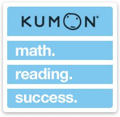

Currently, I work at my local
Kumon Math and Reading Center,
where I am employed as a Kumon Grader. It has been my pleasure to have been working in the center
from August 2018, till now. Some of the tasks I do include helping students with their math and
reading, by providing answers to their questions. In addition, I also correct children’s work for
accuracy and neatness. Lastly, I also play the role of a team member, to many of the co-workers
at the center. Over this time period, I have been able to create many bonds with the members of the
center. Skills that I have obtained from being in a paid position include: interacting with clients
(children), arriving in a timely manner, and communicating with my Kumon Staff. Interacting with
young children has always been a joy for me. This experience allowed me to once more, enter the
mindset of young children, to help them in their academic endeavors. Arriving in a timely manner
is one of the most important aspects of holding a job. Through this job, I have learned the
importance of timekeeping, as one's lateness, greatly affects the dynamics of how others are able
to complete their tasks. Since the center works collaboratively, I have made it my priority to
ensure that I completed each of my shifts, with the highest quality I can provide. Upon meeting
with one of my managers, she has complimented me about my ability to correct children’s classwork
and excellent pace. Overall, working at Kumon has allowed me to develop the skills needed in the workforce.

I am also a part of the Dublin Freshman Mentorship Program, which helps incoming
Freshman adapt to the high school rigor and style. The mentorship program
requires a commitment of 20 minutes every Monday, Tuesday, and Thursday, along
with meeting twice a month on Wednesday. When meeting the Freshman three times
a week, as a mentorship we hold the responsibility of ensuring that they can
adapt to the new conditions, and are not falling behind in any situation. Our
mentorship program allows us to interact with a group of 20-25 Freshmen, along
with a teacher who serves as the overall advisor. Through this program, I was
able to interact with new students, who I would not have been able to create
a bond with outside this program. As a large group, all the mentors would also
meet once a month, and learn about various strategies on how to engage with the
Freshman, and ensure that the program would be beneficial to them. We would also
have a meeting with our advisor every month to improve the program in a small
atmosphere. This year we focused on making sure that all the Freshmen were
welcomed, and have a mentor that they are comfortable talking with about various
subjects.